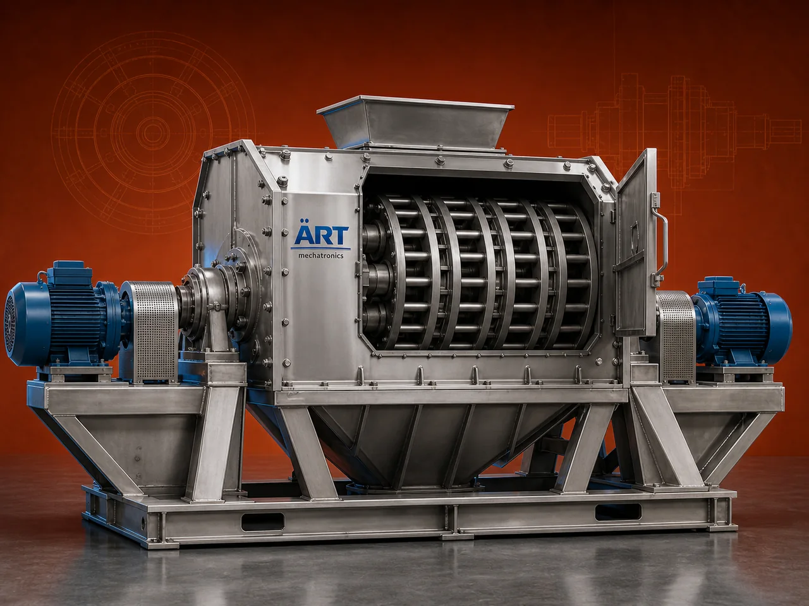

Disintegrator Machine (Industrial High-Speed Crushing & Size Reduction System)
A Disintegrator Machine, also known as an Industrial Disintegrator or Disintegrator Mill, is a high-speed size reduction equipment designed to crush, break, and disintegrate materials into coarse or semi-fine particles.

About the Disintegrator Machine
It is commonly used as a pre-grinding machine before pulverizers or fine grinding systems, making it an essential part of many processing plants.
Disintegrators are widely used in industries such as food processing, spices, agro products, chemicals, minerals, feed processing, and recycling, where efficient size reduction is required before further processing.
ART Mechatronics offers robust and high-performance disintegrator machines, engineered for high throughput, durability, and continuous industrial operation.
One machine, many names
Buyers search for this equipment under many terms — we manufacture all of them:
Working Principle of Disintegrator Machine
Raw material is fed into the machine through:
Inside the machine:
Material undergoes:
Results in coarse to semi-fine particles
Processed material is discharged through:
Types of Disintegrator Machines
Industries Using Disintegrator Machine
🌾 Agro & Food Industry
- Grains
- Pulses
- Spices
🌶️ Spice Industry
- Chili
- Turmeric
⚗️ Chemical Industry
- Chemicals
- Raw materials
🏗️ Mineral Processing
- Minerals
- Limestone
🌿 Feed Industry
- Animal feed
♻️ Recycling Industry
- Waste materials
Features & Advantages
✔ High-speed crushing and disintegration ✔ Suitable for wide range of materials ✔ Uniform output size ✔ High production capacity ✔ Robust and durable construction ✔ Easy maintenance ✔ Energy-efficient operation
Technical Highlights
- Capacity: Custom (kg/hr to tons/hr)
- Crushing Type: Impact + Shear
- Rotor Speed: High RPM
- Screen Size: Adjustable
- Construction: Mild Steel / Stainless Steel
- Drive: Electric motor
Turnkey Disintegration Solutions
ART Mechatronics offers:
- Complete size reduction system design
- Machine selection based on material
- Integration with grinding systems
- Installation & commissioning
- After-sales service & AMC
Why Choose Art Mechatronics
- Expertise in industrial size reduction systems
- Customized solutions for various industries
- High-performance and durable machines
- Reliable and continuous operation
- Proven performance across applications
Applications
- Food Processing Units
- Spice Processing Plants
- Chemical Processing Units
- Mineral Processing Plants
- Feed Manufacturing Units
Related Size Reduction & Grinding machines
Get pricing & specs for the Disintegrator Machine
Share the product, target capacity, current process and plant location. These details help our engineers discuss the right machine or line configuration.
One partner, from design to start-up
ART Mechatronics designs, manufactures, installs and commissions your Disintegrator Machine solution with regional presence in India, UAE and Thailand.